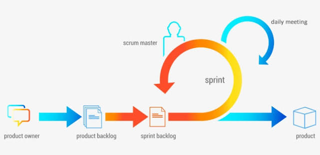
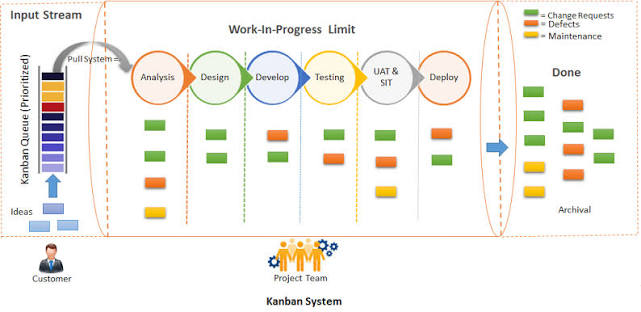
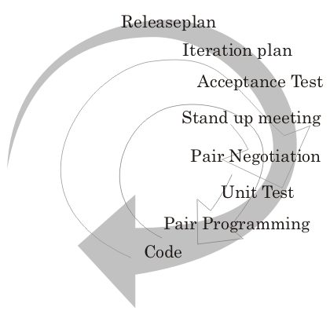

Metodologías Ágiles
Descubre los principios del Manifiesto Ágil y cómo los marcos iterativos e incrementales transforman la entrega de valor en el desarrollo de software.
Manifiesto Ágil: Los 4 Valores Esenciales
Las metodologías ágiles priorizan la adaptación al cambio, la colaboración estrecha con el cliente y la entrega temprana de software funcional por encima de los procesos rígidos.
Individuos e interacciones
Por encima de procesos y herramientas, fomentando la comunicación directa y el trabajo en equipo autogestionado.
Software funcionando
Por encima de la documentación exhaustiva, entregando valor real de forma continua a lo largo del ciclo.
Colaboración con el cliente
Por encima de la negociación contractual, integrando el feedback constante en cada iteración.
Respuesta ante el cambio
Por encima de seguir estrictamente un plan inicial rígido, adaptándose a las necesidades emergentes del mercado.
Los 12 Principios del Manifiesto Ágil
- 1. Satisfacción del cliente mediante entrega temprana y continua.
- 2. Aceptar que los requisitos cambien, incluso en fases tardías.
- 3. Entregar software funcional frecuentemente (semanas o meses).
- 4. Colaboración diaria entre negocio y desarrolladores.
- 5. Apoyar y confiar en individuos motivados.
- 6. Conversación cara a cara (método más eficiente).
- 7. El software funcionando es la medida principal de progreso.
- 8. Promover el desarrollo sostenible (ritmo constante).
- 9. Atención continua a la excelencia técnica y buen diseño.
- 10. La simplicidad (el arte de maximizar el trabajo no hecho) es esencial.
- 11. Las mejores arquitecturas emergen de equipos auto-organizados.
- 12. Reflexión regular sobre cómo ser más efectivos.
Maquetación Modular por Metodología
Explora las características de los tres marcos más utilizados en la industria. Haz clic en los esquemas visuales para ampliarlos en pantalla completa (US-09).
Scrum Framework
Marco iterativo basado en Sprints de 1 a 4 semanas, roles bien definidos y eventos orientados a la inspección y adaptación.

Kanban Method
Gestión visual del flujo de trabajo continuo, enfocado en limitar el Trabajo en Proceso (WIP) y eliminar cuellos de botella.

Extreme Programming (XP)
Enfocado en la excelencia técnica y desarrollo de software con prácticas como TDD, Pair Programming e Integración Continua.

US-10: Marco de Trabajo Scrum en Detalle
Explora los componentes esenciales de Scrum clasificados por Roles, Eventos y Artefactos.
Product Owner
Maximiza el valor del producto gestionando, ordenando y clarificando el Product Backlog según las necesidades del negocio.
Scrum Master
Líder que sirve al equipo facilitando el cumplimiento de Scrum, removiendo impedimentos externos y promoviendo la agilidad.
Equipo de Desarrollo
Profesionales multifuncionales y auto-organizados que ejecutan el trabajo técnico para entregar un Incremento terminado en cada Sprint.
US-11: Tablero Kanban Interactivo y Límites WIP
Prueba de forma dinámica cómo funciona el límite de Trabajo en Proceso (WIP - Work in Progress). Arrastra las tarjetas o presiona las flechas para mover las tareas entre las columnas del flujo.
Por Hacer
2Estructurar tablas relacionales en MySQL para la gestión de usuarios.
Instalar dependencias y módulos PHP en el entorno local.
En Proceso WIP Máx: 2
1Desarrollar la barra superior responsiva con menú desplegable.
Hecho (Done)
1Creación del repositorio y carpetas del proyecto 67 Patrol.